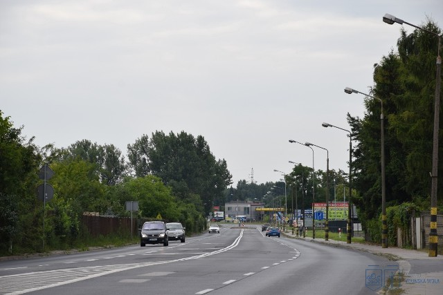

Remont ul. Długiej rusza w listopadzie

Impulsem do organizacji patroli było fizyczne starcie między grupą Polaków a grupą migrantów z Ameryki Łacińskiej...
Jak podaje portal ePoznan.pl, pierwszy patrol zebrał się w Kórniku, a zorganizował go lokalny zawodnik MMA Rafał Podejma...

Trasa linii 66 zostanie skrócona do relacji Zawodzie Centrum Przesiadkowe – Dziećkowice Łukasiewicza...